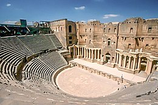
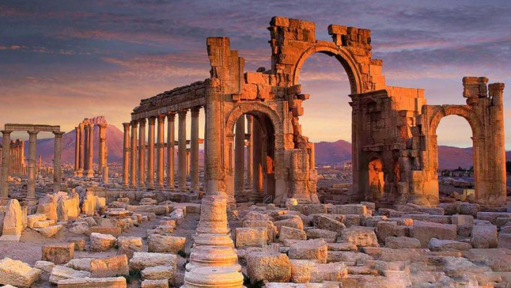
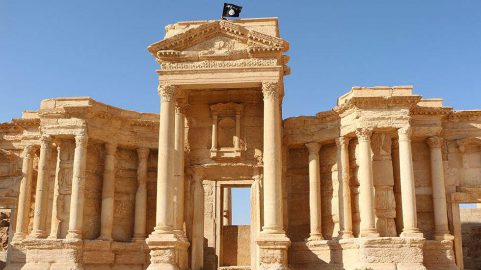

-Syria's Ancient Ruins-
Bosra
Bosra is an ancient city mentioned in 14th century BC Egyptian sources. A key Nabatean city, it became the prosperous provincial capital of the Roman province of Arabia Petraea following the dissolvement of the Nabatean kingdom. With the advent of Christianity, Bostra flourished as a Metropolitan Archbishopric, under the jurisdiction of Eastern Orthodox Patriarchate of Antioch and All the East. It also became a Latin Catholic titular see and the episcopal see of a Melkite Catholic Archeparchy.
Throughout its history under various Muslim rulers, the city maintained its strategic importance as Syria's southern gateway. It attracted attention from Damascus' rulers and was governed by various lords, serving as a hub for Islamic learning and endowments. However, it declined into a village during the Ottoman era, only to be revitalized in the 20th century with the construction of the Hijaz railway and due to growing archaeological interest, later prompting tourism-focused development by the Syrian government. Today, it is a major archaeological site and has been declared by UNESCO as a World Heritage Site.
Throughout its history under various Muslim rulers, the city maintained its strategic importance as Syria's southern gateway. It attracted attention from Damascus' rulers and was governed by various lords, serving as a hub for Islamic learning and endowments. However, it declined into a village during the Ottoman era, only to be revitalized in the 20th century with the construction of the Hijaz railway and due to growing archaeological interest, later prompting tourism-focused development by the Syrian government. Today, it is a major archaeological site and has been declared by UNESCO as a World Heritage Site.

Palmyra/Tadmor

The city grew wealthy from trade caravans; the Palmyrenes became renowned as merchants who established colonies along the Silk Road and operated throughout the Roman Empire. Palmyra's wealth enabled the construction of monumental projects, such as the Great Colonnade, the Temple of Bel, and the distinctive tower tombs. Ethnically, the Palmyrenes combined elements of Amorites, Arameans, and Arabs. The city's social structure was structured around kinship and clans, and its inhabitants spoke Palmyrene Aramaic, a variety of Western Middle Aramaic, while using Koine Greek for commercial and diplomatic purposes. The Hellenistic period of West Asia influenced the culture of Palmyra, which produced distinctive art and architecture that combined different Mediterranean traditions. The city's inhabitants worshiped local Semitic, Mesopotamian, and Arab deities.
By the third century, Palmyra had become a prosperous regional center. It reached the apex of its power in the 260s, when the Palmyrene King Odaenathus defeated the Sasanian emperor Shapur I. The king was succeeded by queen regent Zenobia, who rebelled against Rome and established the Palmyrene Empire. In 273, Roman emperor Aurelian destroyed the city, which was later restored by Diocletian at a reduced size. The Palmyrenes converted to Christianity during the fourth century and to Islam in the centuries following the conquest by the 7th-century Rashidun Caliphate, after which the Palmyrene and Greek languages were replaced by Arabic.

ALhusn
Al-Husn (Arabic: الحصن, also spelled al-Hisn) is a large village in northwestern Syria, administratively part of the Homs Governorate, located west of Homs and north of the border with Lebanon. Nearby localities include al-Huwash to the east, Anaz to the southeast, Aridah to the south, al-Zarah to the southwest, Zweitina to the west, al-Nasirah and Marmarita to the northwest, Muqlus to the north and Mazinah to the northeast.
According to the Syria Central Bureau of Statistics (CBS), al-Husn had a population of 8,980 in the 2004 census. It is the largest village in the al-Huwash nahiyah ("subdistrict"), which consisted of 19 localities with a collective population of 24,684 in 2004.[1] The inhabitants of the village are predominantly Sunni Muslims, with a Christian minority, in an area largely populated by Christians that is known as Wadi al-Nasara ("Valley of the Christians.") The village has a Greek Catholic Church.
br
According to the Syria Central Bureau of Statistics (CBS), al-Husn had a population of 8,980 in the 2004 census. It is the largest village in the al-Huwash nahiyah ("subdistrict"), which consisted of 19 localities with a collective population of 24,684 in 2004.[1] The inhabitants of the village are predominantly Sunni Muslims, with a Christian minority, in an area largely populated by Christians that is known as Wadi al-Nasara ("Valley of the Christians.") The village has a Greek Catholic Church.
br
The village is built around the Krak des Chevaliers fortress (known as Qalʿet al-Husn in Arabic) and the name al-Husn means "the Castle." The building itself used to be inhabited until its residents were evacuated by the French authorities who wanted to excavate the site. The village has since developed with little civic planning, which has resulted in urban sprawl surrounding the fortress. A restaurant called Al-Kala'a Restaurant that is popular with tourists is located on a hill in the village.[6]